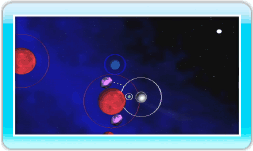

11 |
Levels voltooien |
 |
|
Als je de basisprincipes van Orbient onder de knie hebt, gebruik dan je vaardigheden om de volgende manoeuvres uit te voeren om zo uiteindelijk alle levels te voltooien. 
● Blauwe sterren opslokken Bots eerst tegen een blauwe ster en vergroot daardoor je eigen ster. Naarmate deze groeit, zullen rode sterren die je daarvoor niet kon opslokken, blauw worden, waarna je dit alsnog kunt doen. Als je niet weet welke kant je uit moet, druk dan op

● Een grijze ster in een satelliet veranderen Als je voorzichtig langs een grijze ster beweegt, kun je van hem een satelliet maken. Het voltooien van een level met satellieten levert je bonuspunten op, afhankelijk van het aantal satellieten. Het aantal satellieten wordt ook opgeteld bij je aantal levens. Probeer zoveel mogelijk satellieten te verzamelen voordat je een level voltooit. 
● De doelster in een satelliet veranderen Als je ster even groot is als de doelster, zal de laatste geel opgloeien. Maak een satelliet van de doelster om het level te voltooien. Dit gebeurt op dezelfde wijze als bij een grijze ster. Opmerking: je kunt de doelster niet absorberen. Als je tegen een doelster botst, verlies je een leven. ● Het resultatenscherm bekijken Je score in een level wordt berekend aan de hand van de onderstaande punten. Als je een level voltooit door van een maan een satelliet te maken, verschijnt er een maanteken rechts van je bonuspunten.
|
 om het overzichtsscherm te bekijken.
om het overzichtsscherm te bekijken. |
 |
 |